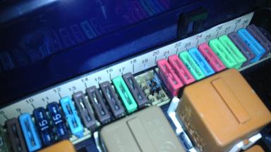 コゲてしまった部分の写真 全焼してしまう前に気づいてよかった（笑 ここはこのようになってしまうことが稀にあるようだ。海外のサイトでも同じような症状が紹介されていた。 ヒューズホルダーは新品を取ろうと問い合わせたが、本国在庫無し・生産終了だったorz ということで、部品取りからヒューズボックスassyで取ってきたが、交換がかなり面倒そうだ。 とりあえず、ヒューズホルダーの接点を磨いてブロアモーターだけ交換することにした。 レジスターやIHKAの基盤には特にコゲたような所は無かった。 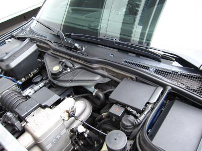 Ｅ３４はエンジン側からのアプローチになる。 内装をバラさなくて良いので気持ちは楽だが、M30とM60エンジン搭載車はリザーブタンクを退かす必要がある。 冷却水を抜かないといけなかったら面倒だなぁ・・・ と思いつつ、なんとかなるだろうと作業開始（笑 |
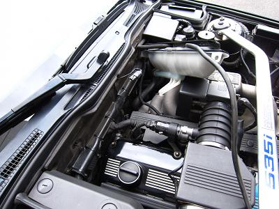 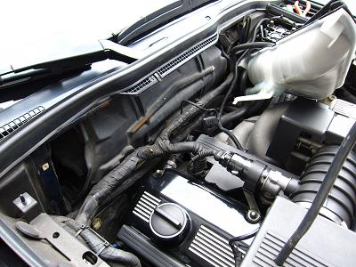 オーバーフロー用のﾎｰｽを抜き、タンクのプラネジ２つを外してタンクを持ち上げる。 それなりにスペースが出来て冷却水を抜かず取り出せそうだ！ タンク下のタイラップを切り、配線の束をフリーにして仕切り板を取り外す。これは７ミリのネジ５本で固定されている。 右の写真が仕切り板を外したところだ。 |
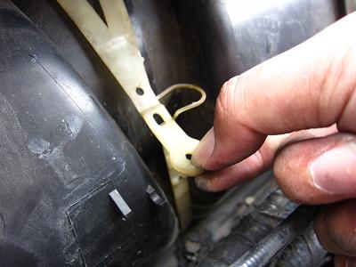 仕切り板を外し、ペラペラの板を外すとブロアケースが出てくる。 ケースは写真の白いバンドと下部２箇所のクリップで固定されている。 このバンドは写真の方向に引っ張ると外れる。（少し固い） |
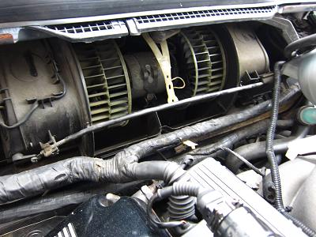 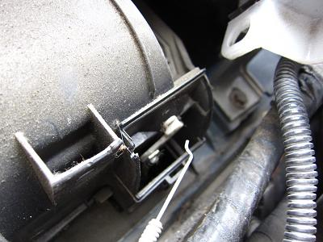 バンドとクリップを外して、ケースの蓋を開ければブロアファンが現れる。 ファンの前に通っているフラップケーブルは写真右のように外しておくと作業しやすい。 |
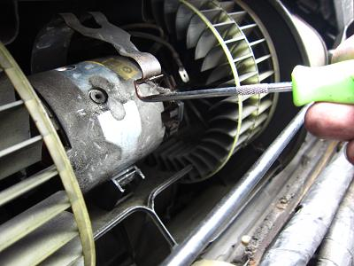 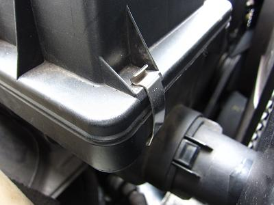 ブロア本体の取り外しに入ろう。 モーターを固定している金具は少し外しにくい。 イメージとしては、写真右のエアークリーナーボックスの止め具を外すような感じだ。 Ｌ字の工具を写真左のようにかけて、少し上に引っ張ると外れる。 金具が外れ、配線２本を外したらモーターは完全にフリーだ。 |
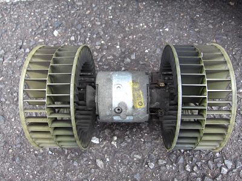 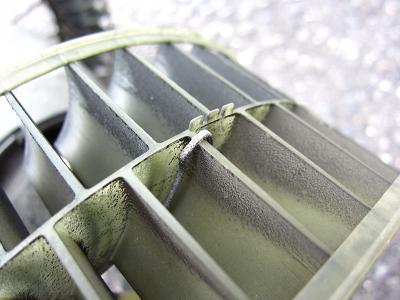 取り外した図 車外へ引き出すにあたり、特に問題になるようなことは無かった。 ファンをよく観察してみると、バランス取り用（？）っぽい金物が。 |
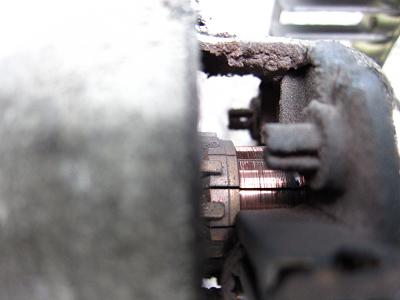 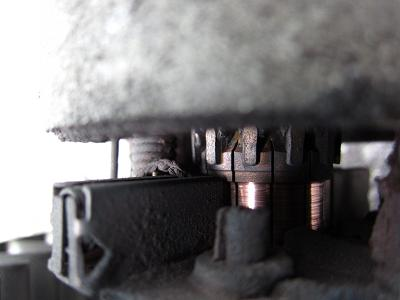 手で回してみると少し重く、モーターのコミュテーターはすり減り、ブラシも使用限界に達していた。。。 ここまですり減っても動くんだと少し感動（笑 家電ですら２０年持てば十分なのに、この環境下でこれだけ動いてくれれば十分だ。 ありがとう！ |
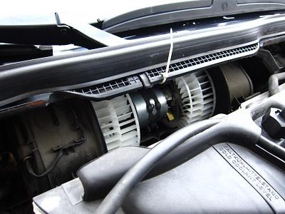 新しいファンを取り付けたところ。 周りに接触しないように十分微調整を行う。 |
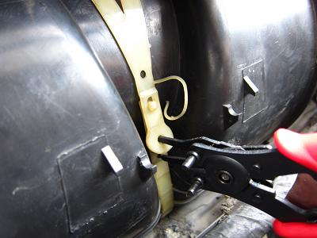 ブロアケースカバーを取り付ける。 下部２ヶ所のクリップは簡単に装着できるが、このバンドは装着しにくい。 素手ではなかなか伸びてくれず、工具を使ってどうにか入った。 |
あとは外した逆に組んでいくだけだ。 エアコンをつけてみると、以前より明らかに風が強い。 交換して正解だったようだ。 エアコンをつけて300kmくらい走行したが、ヒューズが熱を持つこともなく、まずは問題ないようだ。 しかし、またいつ接触不良が起きるかわからない。ヒューズホルダーと端子の交換も近いうちに行おうと思う・・・。 Ｍゴローはエアコンが必要ない時は切って乗っている。 つけっぱなしで乗っている場合は、思っているよりも消耗しているかもしれない。少しでも違和感を感じたら早めに点検したほうが良いだろう。 |